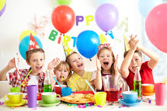

Daftar Lagu

Naik Odong - Odong
Odong odong lewat didepan rumahku
Dari tadi itu yang ku tunggu-tunggu
Cepat cepat aku mencari ibuku
Lalu aku keluar bersama ibu
Aku naik odong odong
Aku naik odong odong
Aku pilih bentuk yang lucu skali
Aku naik odong odong
Aku naik odong odong
Aku senang ibupun turut gembira
Tukang odong odong kerjanya mnegayuh
Sambil putar musik yang enak didengar
Kalau ngantuk odongpun brenti berputar
Anak anak pun mulai jadi tak sabar
Aku naik odong odong
Aku naik odong odong
Aku pilih bentuk yang lucu skali
Aku naik odong odong
Aku naik odong odong
Aku senang ibupun turut gembira
Tukang odong odong kerjanya mnegayuh
Sambil putar musik yang enak didengar
Kalau ngantuk odongpun brenti berputar
Anak anak pun mulai jadi tak sabar
Aku naik odong odong
Aku naik odong odong
Aku pilih bentuk yang lucu skali
Aku naik odong odong
Aku naik odong odong
Aku senang ibupun turut gembira
Aku naik odong odong
Aku naik odong odong
Aku pilih bentuk yang lucu skali
Aku naik odong odong
Aku naik odong odong
Aku senang ibupun turut gembira
Aku senang ibupun turut gembira
Aku senang ibupun turut gembira

Cicak - cicak di dinding
Cicak-cicak di dinding
Diam diam merayap
Datang seekor nyamuk
Hap ... lalu ditangkap
- Kembali

Abang tukang bakso
Abang tukang bakso
Mari mari sini
Aku mau beli
Abang tukang bakso
Cepatlah kemari
sudah tak tahan lagi
Satu mangkuk saja
dua ratus perak
yang banyak baksonya
Tidak pake saos
Tidak pake sambel
Juga tidak pake kol
Bakso bulat
seperti bola pingpong
kalo lewat
membikin perut kosong
Jadi anak
jangan kau suka bohong
Kalo bohong
digigit kambing ompong
- Kembali
Naik kereta apiku
Naik kereta api ... tut ... tut ... tut
Siapa hendak turut
Ke Bandung ... Surabay
Bolehlah naik dengan percuma
Ayo temanku lekas naik
Keretaku tak berhenti lama
Cepat kretaku jalan ...tut...tut...tut
Banyak penumpang turut
K'retaku sudah penat
Karena beban terlalu berat
Di sinilah ada stasiun
Penumpang semua turun
- Kembali

Naik gunung
Naik - naik, ke puncak gunung
tinggi - tinggi sekali
Naik - naik, ke puncak gunung
tinggi - tinggi sekali
Kiri - kanan kulihat saja
banyak pohon cemara
Kiri - kanan kulihat saja
banyak pohon cemara
- Kembali

Lihat kebunku
Lihat kebunku
penuh dengan bunga
Ada yang putih,
dan ada yang merah
Setiap hari
kusiram semua
mawar melati,
semuanya indah!
- Kembali

Pelangi - pelangi
Pelangi pelangi
Alangkah indahmu
Merah, kuning, hijau
Di langit yang biru
Pelukismu Agung, siapa gerangan
Pelangi, pelangi, ciptaan Tuhan!
- Kembali

Balonku
Balonku ada lima
Rupa-rupa warnanya
hijau, kuning, kelabu
Merah muda dan biru
Meletus balon hijau DOR
Hatiku sangat kacau
Balonku tinggal empat
Kupegang erat-erat
- Kembali

Burung kakaktua
Burung kakaktua
hinggap di jendela
nenek sudah tua
giginya tinggal dua
Trek-dung ... trek-dung ...
Trek-dung tra-la-la
Trek-dung ... trek-dung ...
Trek-dung tra-la-la
Trek-dung ... trek-dung ...
Trek-dung tra-la-la
nene sudah tua
- Kembali

Bintang kejora
Kupandang langit penuh bintang bertaburan
Berkelap kelip seumpama intan berlian
Tampak sebuah lebih terang cahayanya
Itulah bintangku Bintang Kejora yang indah s'lalu
- Kembali
Bintang Kecil
Bintang kecil, di langit yang tinggi
Amat banyak, menghias angkasa
Aku ingin, terbang dan menari
jauh tinggi ke tempat kau berada
- Kembali
Bangun tidur
Bangun tidur kuterus mandi
Tidak lupa menggosok gigi
Habis Mandi kutolong ibu
Membersihkan tempat tidurku
- Kembali
Dua mata saya
dua mata saya
hidung saya satu
dua kaki saya pakai sepatu baru
dua telinga saya yang kiri dan kanan
satu mulut saya tidak berhenti makan
- Kembali

Kasih ibu
Kasih ibu,
kepada beta
tak terhingga sepanjang masa
Hanya memberi,
tak harap kembali,
Bagai sang surya, menyinari dunia.
- Kembali

Tari topeng
Tari topeng bergembira
siapa suka boleh coba
diiringi lagu riang
tepuk tangan sama-sama
tari topeng bergembira
- Kembali

Topi saya bundar
Topi saya bundar.
Bundar topi saya.
Kalau tidak bundar,
bukan topi saya!
- Kembali
Tukang pos
Aku tukang pos rajin sekali
Surat kubawa naik sepeda
siapa saja aku layani
tidak kupilih miskin dan kaya
Kring ... kring ... pos!
Surat Sutini harus kuantar
Untuk Komara mesti kubawa
Ke sana kini roda kuputar
Kabar yang baik orang gembira
Kring ... kring ... kring ... kring ... pos!
- Kembali

Ulang tahun
Panjang umurnya .. panjang umurnya
Panjang umurnya ... serta mulia
Serta mulia ... serta mulia
Panjang umurnya .. panjang umurnya
Panjang umurnya ... serta mulia
Serta mulia ... serta mulia
Selamat ulang tahun kami ucapkan
Selamat panjang umur kita kan doakan
Selamat sejahtera sehat sentosa
Selamat panjang umur dan bahagia
Selamat ulang tahun kami ucapkan
Selamat panjang umur kita kan doakan
Selamat sejahtera sehat sentosa
Selamat panjang umur dan bahagia
Selamat panjang umur dan bahagia
- Kembali

Satu satu aku sayang ibu
satu satu aku sayang ibu
dua dua juga sayang ayah
tiga tiga sayang adik kakak
satu dua tiga sayang semuanya
- Kembali